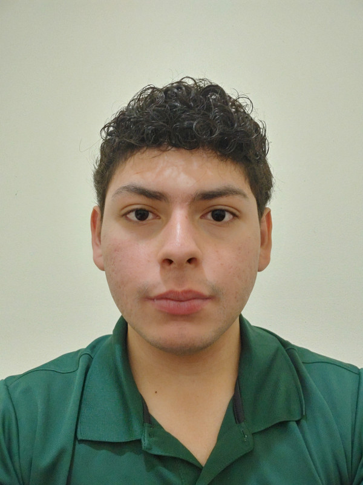

Bio
Apasionado por la tecnología y la innovación en sistemas, motivado por desafiar
constantemente mis habilidades y conocimientos en el campo. Como aspiración,
busco obtener un profundo conocimiento en el diseño, implementación
y mantenimiento de sistemas complejos y eficientes, con el fin de convertirme
en un profesional altamente capacitado y competitivo en la industria.
Formación
2008-2022 | Day Star-School
Bachillerato en Ciencias y Humanidades
2022-Actualidad | UNICAH
Ingeniería en Ciencias de la Computacion